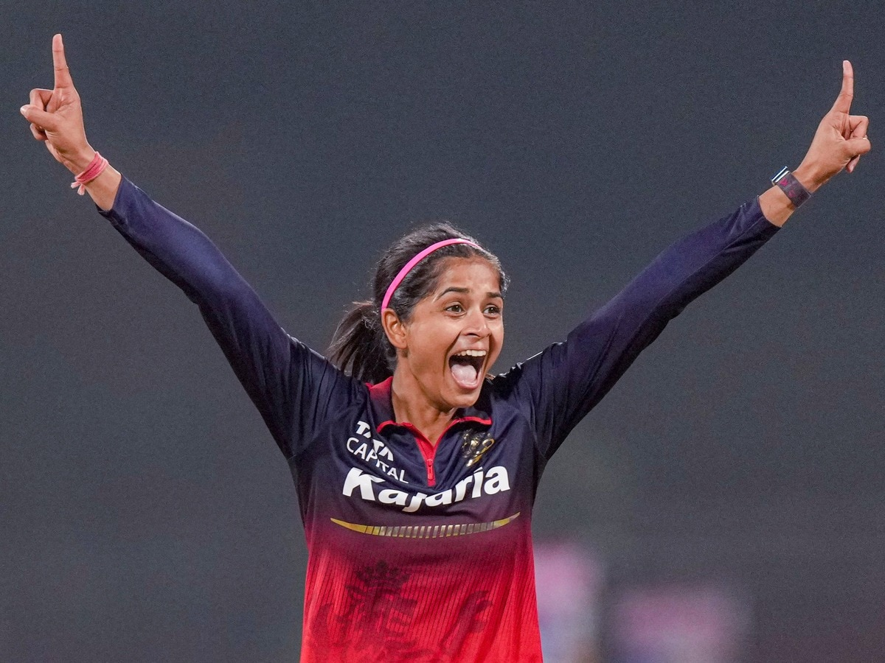

श्रेयंका पाटिल का पंजा, गुजरात के जबड़े से छीनी जीत!
बैंगलोर की जर्सी में, एक शेरनी दहाड़ी थी,
गेंद से ऐसी आग लगाई, कि गुजरात की शामत आई थी।
WPL 2026 के एक रोमांचक मुकाबले में, रॉयल चैलेंजर्स बैंगलोर की युवा सनसनी श्रेयंका पाटिल ने अपनी फिरकी का ऐसा जादू चलाया कि गुजरात जायंट्स की टीम ताश के पत्तों की तरह बिखर गई। यह सिर्फ एक जीत नहीं थी, यह एक खिलाड़ी के अटूट जज़्बे और शानदार प्रदर्शन की कहानी थी, जिसने RCB के फैंस को जश्न मनाने का एक और मौका दे दिया।
पांच विकेट का 'पंच', T20 करियर का पहला पंजा
श्रेयंका ने अपने WPL करियर का सर्वश्रेष्ठ प्रदर्शन करते हुए 5 विकेट चटकाए। यह उनके T20 करियर का भी पहला 5-विकेट हॉल है। उन्होंने एक के बाद एक गुजरात के बल्लेबाज़ों को पवेलियन का रास्ता दिखाया और मैच का रुख पूरी तरह से RCB की ओर मोड़ दिया। उनकी गेंदबाज़ी में वो धार और आत्मविश्वास दिखा, जो बड़े खिलाड़ियों की पहचान होती है।
उनकी घातक गेंदबाज़ी के सामने गुजरात का कोई भी बल्लेबाज़ टिक नहीं सका। इस प्रदर्शन के साथ, श्रेयंका WPL में 5 विकेट लेने वाली चुनिंदा गेंदबाज़ों की सूची में शामिल हो गई हैं, और उन्होंने इतिहास के पन्नों में अपना नाम सुनहरे अक्षरों में दर्ज करा लिया है। यह एक ऐसा स्पेल था जिसने न केवल RCB को दो महत्वपूर्ण अंक दिलाए, बल्कि यह भी साबित कर दिया कि वह आने वाले समय में भारतीय क्रिकेट का एक बड़ा सितारा बनने वाली हैं।
हर गेंद एक पहेली थी, हर विकेट एक कहानी,
श्रेयंका की गेंदबाज़ी ने लिख दी, जीत की नई निशानी।
दिल जीता, पर अवॉर्ड नहीं
हैरानी की बात यह रही कि इस मैच जिताऊ प्रदर्शन के बावजूद श्रेयंका पाटिल को 'प्लेयर ऑफ द मैच' का अवॉर्ड नहीं मिला। हालांकि, उन्होंने अपने खेल से करोड़ों प्रशंसकों का दिल ज़रूर जीत लिया। क्रिकेट जगत में अक्सर ऐसे मौके आते हैं जब आंकड़े सब कुछ बयां नहीं करते, लेकिन श्रेयंका का प्रदर्शन उनकी काबिलियत की गवाही दे रहा था। (यह भी पढ़ें: 5 विकेट लेकर भी श्रेयंका पाटिल को नहीं मिला POTM, राधा यादव ने फिर ऐसे जीता दिल)
कुल मिलाकर, यह जीत RCB के लिए जितनी ज़रूरी थी, उतनी ही श्रेयंका के आत्मविश्वास के लिए भी। उनके इस 'पंजे' ने बैंगलोर को टूर्नामेंट में एक नई ऊर्जा दी है और विरोधियों के लिए खतरे की घंटी बजा दी है।